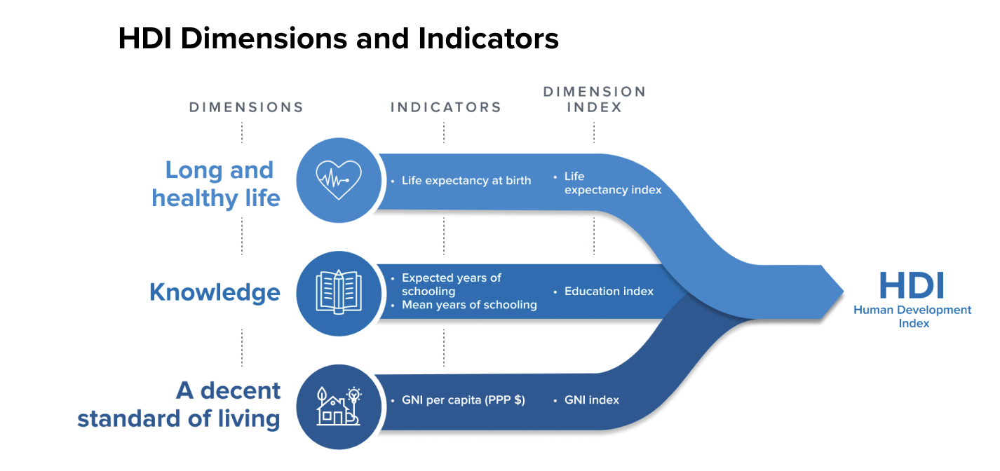
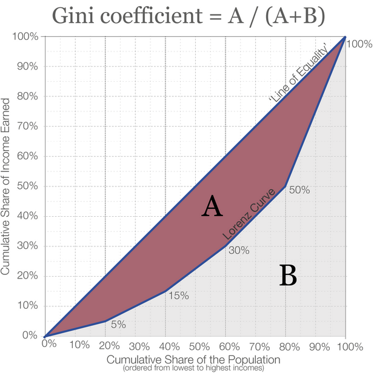

3 Global inequality and development
3.0.1 Definition
- Global inequality refers to the economic, social, and political disparities between countries and regions.
- Development is the process of improving economic conditions, health, education, and overall well-being.
3.0.2 Why it matters
- Over 700 million people live in extreme poverty (World Bank, 2023).
- Wealth concentration: The richest 1% own more wealth than the bottom 50% combined.
- Disparities in health, education, and access to resources shape global migration and economic policies.
3.0.3 Key questions in global inequality and development
- Why do some countries develop faster than others?
- What are the causes and consequences of global economic disparities?
- How can international policies reduce inequality?
- How does globalization affect development?
3.1 Understanding Global Inequality
3.1.1 Measuring Economic Inequality
3.1.1.1 Gross Domestic Product (GDP) per capita
Gross domestic product (GDP) per capita is an economic metric that breaks down a country’s economic output to a per-person allocation. Economists use GDP per capita to determine the prosperity of countries based on their economic growth.
Measures economic output per person.
- High-income countries (HICs): USA, Germany, Japan.
- Middle-income countries (MICs): Mexico, India, Brazil.
- Low-income countries (LICs): Chad, Afghanistan, Haiti.
3.1.1.2 Human Development Index (HDI)

Source: https://hdr.undp.org/data-center/human-development-index#/indicies/HDI
Measures overall well-being using:
- Life expectancy (health).
- Education (years of schooling).
- Income per capita (economic status).
3.1.1.3 Gini Coefficient
The Gini coefficient, or Gini index, is the most commonly used measure of inequality. It was developed by Italian statistician Corrado Gini (1884–1965) and is named after him.
It measures inequality on a scale from 0 to 1, where higher values indicate higher inequality. This can sometimes be shown as a percentage from 0 to 100%, called the “Gini Index”.
Measures income inequality within a country (0 = perfect equality, 1 = extreme inequality).

Source: https://ourworldindata.org/what-is-the-gini-coefficient
Example: Comparing HDI Levels
| Country | HDI (2022) | Life Expectancy | Education (Years) | Income (USD) |
|---|---|---|---|---|
| Norway | 0.957 | 83 years | 13.5 years | 89,000 |
| USA | 0.921 | 79 years | 13.3 years | 75,000 |
| India | 0.633 | 69 years | 6.7 years | 6,000 |
| Chad | 0.394 | 54 years | 3.5 years | 2,000 |
3.2 Causes of Global Economic Disparities
3.2.1 Historical Factors
- Colonialism: European powers exploited Africa, Asia, and Latin America, leaving economic dependency.
- Slave Trade: Destroyed labor forces and disrupted economic growth in Africa.
- Unequal Trade Agreements: Richer nations set rules that benefit their economies (e.g., WTO policies).
3.2.2 Political and Economic Factors
- Corruption and Poor Governance: Weak institutions reduce foreign investment and development.
- Debt Burden: LICs struggle to repay international loans, limiting infrastructure development.
- Resource Curse: Countries rich in natural resources (e.g., oil in Venezuela) often suffer economic instability.
3.3 Consequences of Global Inequality
3.3.1 Economic Consequences
- Brain Drain: Skilled workers migrate from LICs to HICs (e.g., African doctors moving to Europe).
- Slum Growth: Rapid urbanization without infrastructure leads to informal settlements (e.g., Mumbai’s Dharavi slum).
3.3.3 Political Consequences
- Political Instability: Economic inequality fuels protests and revolutions (e.g., Arab Spring).
- Conflict Over Resources: Nations compete for oil, water, and minerals (e.g., South China Sea disputes).
3.4 Solutions to Global Inequality
3.4.1 Sustainable Development Goals (SDGs)
UN’s 17 goals to reduce poverty and promote equality by 2030.
Key targets:
- No poverty: Reduce extreme poverty below 3%.
- Quality education: Universal primary and secondary schooling.
- Gender equality: Equal pay and leadership roles for women.
- Climate action: Reduce carbon emissions and deforestation.
3.4.2 Economic and Political Solutions
- Fair Trade Initiatives: Ensures farmers get fair wages for crops.
- Debt Forgiveness: Canceling debt for LICs to allow investment in development.
- Foreign Aid vs. Investment:
- Aid (short-term relief) vs. investment (long-term growth).
- Example: China’s Belt and Road Initiative (infrastructure investment in Africa).
3.5 Takeaway
- Global inequality is shaped by history, economy, politics, and social factors.
- Policies like SDGs, fair trade, and debt relief can reduce inequalities.
3.2.3 Social and Environmental Factors